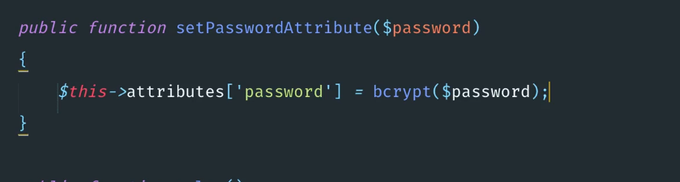

Para crear un mutador para los password encriptados.

El nombre es muy importante con las mayusculas y el Attribute al final.

El set le dice que antes de guardar en la base de datos lo encripte muy chingon.



Ojo esto se hace el el modelo que lo vas a necesitar. 

Cuando detecta la variable password automaticamnet la encrypta.


